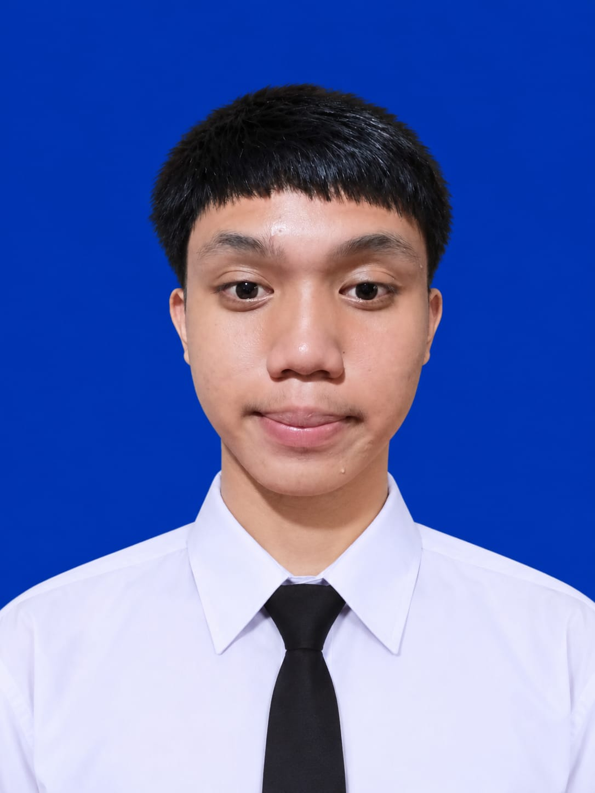

Pelajar SMK yang tertarik dengan teknologi, desain, dan pengembangan project digital. Website ini menjadi tempat untuk menampilkan karya, kemampuan, dan perjalanan belajar saya.

Halo! Saya Satriyo Wibowo. Saya sedang menempuh pendidikan di SMK dan senang mempelajari hal-hal baru seputar teknologi dan dunia digital. Saya suka mengerjakan project yang bisa membuat skill saya berkembang.
HTML, CSS, dan dasar pengembangan website.
Dasar UI/UX, layout, prototype, warna, dan membuat tampilan yang nyaman digunakan.
Belajar memecahkan masalah melalui project dan latihan secara bertahap.
Website portfolio pribadi dengan desain modern dan responsive.
Konsep landing page untuk sebuah produk atau layanan digital.
Project berikutnya yang akan dibuat untuk mengembangkan kemampuan.
Mengembangkan kemampuan HTML, CSS, dan membuat project website.
Membuat sketsa berbagai aset 2D menggunakan ibispaint, mengembangkan sketsa sesuai kebutuhan projek, mengatur warna dan bayangan untuk mendukung kebutuhan.
Membuat dan merancang berbagai objek atau aset 3D menggunakan Blender.
Punya project, ide, atau ingin berkenalan? Silakan hubungi saya melalui media sosial atau email.